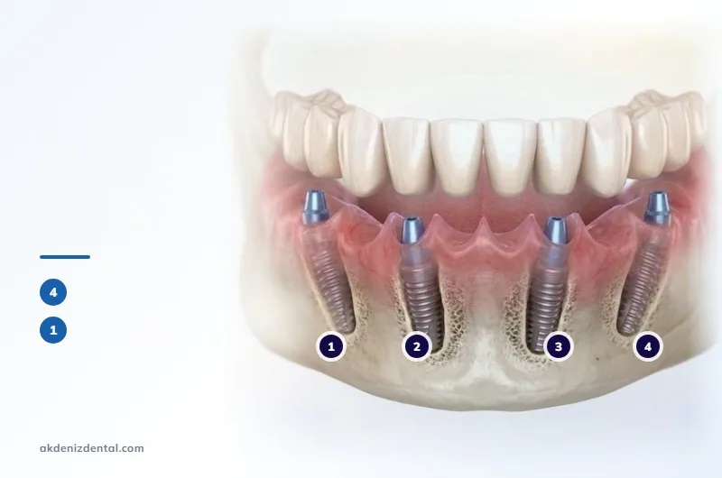
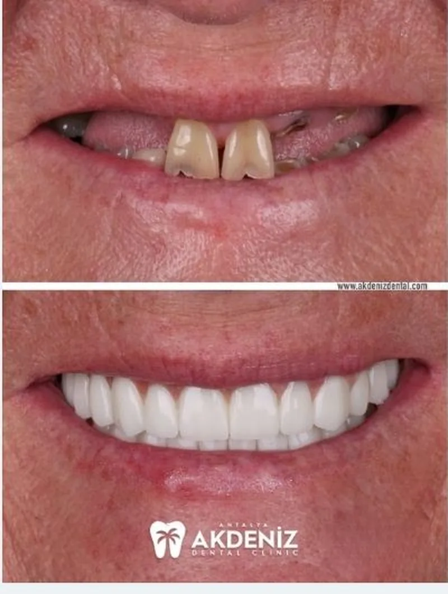
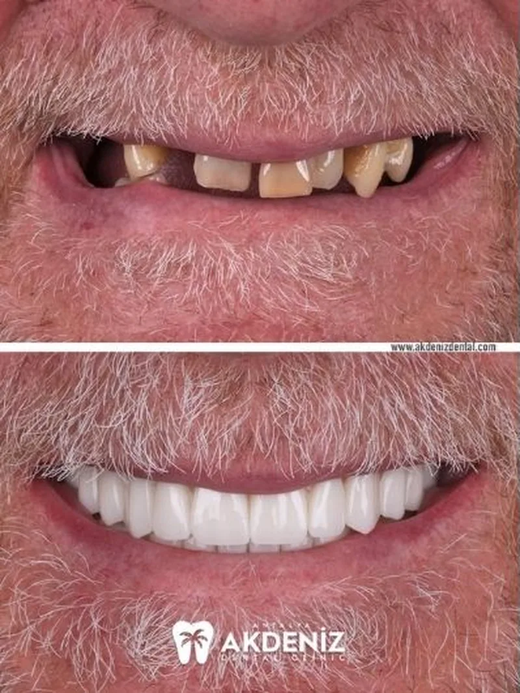
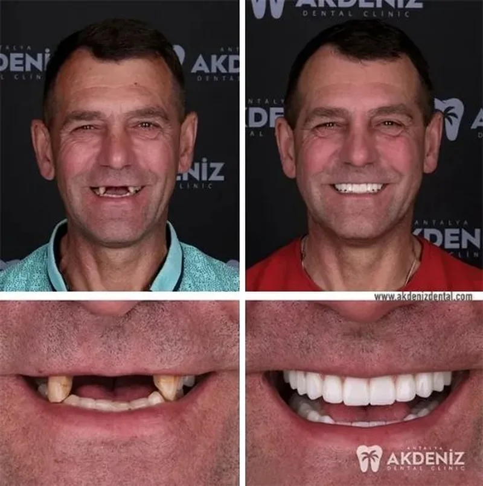

Implanty All-on-4: nowoczesna odbudowa pełnego łuku zębowego
Czy brakujące zęby wpływają na Twoją pewność siebie? W naszej klinice w Antalyi, w Turcji oferujemy metodę All-on-4 implantów stomatologicznych, rewolucyjne rozwiązanie, które może odmienić Twoje życie. To wysokiej jakości leczenie jest nie tylko skuteczne, ale jednocześnie niedrogie. Pozwól nam pokazać, dlaczego Antalya jest najlepszym miejscem na implanty stomatologiczne metodą All-on-4 i dlaczego wyjazd za granicę w celu leczenia stomatologicznego jest rozsądnym wyborem.
Czym są implanty All-on-4?
W przypadku pacjentów, którzy stracili większość lub wszystkie zęby, implanty stomatologiczne metodą All-on-4 stanowią prawdziwą rewolucję. Ta kreatywna operacja wspiera cały łuk sztucznych zębów za pomocą tylko czterech tytanowych implantów.
Strategicznie rozmieszczamy te implanty, aby poprawić stabilność i zminimalizować potrzebę dodatkowych procedur, takich jak przeszczep kości. Rezultatem są praktyczne, naturalnie wyglądające zęby, który przypominają Twoje własne.(Kliknij aby uzyskać szczegółowe informacje)

Antalya · TurcjaAll-on-4Implanty zęboweimplanty na szczękęstały most na cały łuk zębowyDla kogo są implanty All-on-4?
- Dla tych którzy stracili wszystkie zęby
- Dla tych którzy są niezadowoleni ze swoich protez
- Dla tych którzy mają problem z żuciem I mową z powodu utraty zębów
- Dla tych których dziąsła I struktura kości nadają się do wszczepienia implantów
Jakie są zalety implantów All-on-4?
Opłacalność: Biorąc pod uwagę ceny w Turcji, operacje dentystyczne w USA, czy w Wielkiej Brytanii są drogie. Jednak wszczepiając implant metodą All-on-4 w Turcji można zaoszczędzić nawet 70% bez poświęcania jakości.
Natychmiastowe rezultaty: Podczas gdy wszczepienie konwencjonalnych implantów może zająć miesiące, dzięki All-on-4 możesz opuścić klinikę z pięknym uśmiechem jeszcze tego samego dnia.
Wysoki wskaźnik sukcesu: Implanty metodą All-on-4 charakteryzują się wysokim wskaźnikiem powodzenia, dzięki zaawansowanej technologii i wykwalifikowanym dentystom. Profesjonaliści, którzy opanowali to podejście do perfekcji, będą idealni.
Poprawa jakości życia: Nie musisz już unikać ulubionych posiłków ani przejmować się ruchomymi protezami. Implanty metodą All-on-4 zapewniają trwałe i stabilne zamocowanie, dzięki czemu możesz bezpiecznie jeść, rozmawiać i uśmiechać się.
Dlaczego implanty Stomatologiczne metodą All-on-4 za granicą?
Leczenie stomatologiczne za granicą oferuje ogromne korzyści zarówno pod względem kosztów, jak i jakości usług, szczególnie dla osób mieszkających w krajach takich jak Wielka Brytania. Oto główne zalety leczenia za granicą:
Oszczędność
Leczenie stomatologiczne w Wielkiej Brytanii, zwłaszcza leczenie implantologiczne, może być dość kosztowne. W krajach takich jak Turcja zabiegi te oferowane są po bardziej przystępnych cenach. Można uzyskać tę samą jakość i standardy usług, ale zapłacić mniej.
Jakość i Technologia
W Turcji korzysta się z najnowocześniejszych urządzeń i metod w dziedzinie stomatologii. Nowoczesne kliniki świadczą usługi na międzynarodowym poziomie i oferują swoim pacjentom najlepsze możliwości leczenia.
Okazja do Wakacji
Proces leczenia może stać się także okazją do wypoczynku. W turystycznych regionach Turcji można skorzystać z możliwości odpoczynku podczas procesu leczenia i odkryszć uroki tego kraju. Miasta takie jak Antalya, Stambuł, Izmir są idealnymi miejscami zarówno na leczenie, jak i wakacje.
Implanty Stomatologiczne All-on-4 w Turcji
Turcja jest jednym z wiodących krajów na świecie pod względem stomatologii, a zwłaszcza leczenia implantologicznego. Oto zalety wszczepienia implantów dentystycznych All-on-4 w Turcji:
Edukacja i standardy stomatologiczne
Dentyści w Turcji są wykształceni zgodnie z międzynarodowymi standardami, doświadczeni i wyspecjalizowani w swojej dziedzinie. Wydziały stomatologii w Turcji zapewniają edukację z wykorzystaniem najnowszych technologii i metod.
Korzyść finansowa
Zabiegi stomatologiczne w Turcji są oferowane po znacznie bardziej przystępnych cenach w porównaniu na przykład z Wielką Brytanią. Pozwala to na duże oszczędności, przy jednoczesnym zagwarantowaniu wysokiej jakości usług. Ponadto wiele klinik oferuje pakiety leczenia spełniające Twoje potrzeby, takie jak zakwaterowanie i transport.
Łatwy dostęp i nowoczesne kliniki
Turcja znajduje się na pograniczu Europy i Bliskiego Wschodu, co czyni ją bardzo korzystną lokalizacją pod względem transportu. Wiele międzynarodowych lotnisk oferuje bezpośrednie loty do głównych miast w Turcji. Ponadto nowoczesne kliniki stomatologiczne w Turcji świadczą usługi z wykorzystaniem najnowszych urządzeń technologicznych i sterylnego środowiska.
Ile kosztuje All-on-4 w Turcji, a ile w Wielkiej Brytanii?
Kraje stosują różne ceny implantów stomatologicznych metodą All-on-4. Wielka Brytania vs. Turcja:
W Wielkiej Brytanii koszt implantów stomatologicznych metodą All-on-4 waha się od 12 000 do 20 000 funtów za łuk. Wysoka cena wynika z kosztów ogólnych i kosztów utrzymania w Wielkiej Brytanii.
W Turcji koszt implantów stomatologicznych metodą All-on-4 wynosi od 3 500 do 7 000 euro za łuk. Niższe koszty operacyjne i korzystny kurs wymiany walut wpływają na obniżenie cenę. Dodatkowo wiele tureckich klinik zapewnia najwyższej klasy udogodnienia i doświadczonych dentystów, pomimo obniżonych cen.
Wybór odpowiedniej destynacji
Nasza klinika jest dumna z tego, że jest wiodącym ośrodkiem turystyki stomatologicznej w Turcji, oferującym światowej klasy usługi w bezkonkurencyjnych cenach. Wyposażeni w nowoczesną technologię wraz z kadrą wykwalifikowanych specjalistów, zapewniamy wysokiej jakości opiekę stomatologiczną za ułamek kosztów, jakich można oczekiwać gdzie indziej. Strategiczne położenie Turcji i bogate dziedzictwo kulturowe sprawiają, że jest to idealne miejsce do uzyskania najwyższej jakości leczenia stomatologicznego podczas niezapomnianych wakacji. W naszej klinice możesz przywrócić swoje zdrowie i jednocześnie doświadczyć wyjątkowego piękna Turcji.
Korzyści z wybrania Turcji
Nowoczesne Kliniki i najnowocześniejszy sprzęt w Akdeniz Dental
Nowoczesne Kliniki i najnowocześniejszy sprzęt
Kliniki stomatologiczne w Turcji są wyposażone w najnowocześniejszy sprzęt i nowoczesne urządzenia. Dzięki temu proces leczenia przebiega szybciej i bardziej komfortowo.
Doświadczeni i wyszkoleni dentyści
Dentyści w Turcji są wyspecjalizowani i doświadczeni w swoich dziedzinach specjalizacji. Wielu uznanych na całym świecie dentystów świadczy usługi w Turcji. Zwiększa to skuteczność leczenia, jak i zadowolenie pacjentów.
Kompleksowe usługi
Wiele klinik stomatologicznych oferuje specjalne pakiety dla pacjentów z zagranicy. Pakiety te obejmują zakwaterowanie, transport i wycieczki turystyczne, a także proces leczenia. W ten sposób możesz być leczony komfortowo bez żadnych problemów podczas procesu leczenia.
Dlaczego Antalya?
Antalya
Dlaczego Antalya jest dobrym miejscem na leczenie stomatologiczne? Antalya jest rajem dla podróżnych, ponieważ jest nie tylko najlepszym miejscem do uprawiania turystyki stomatologicznej, ale także znajduje się na wspaniałym wybrzeżu Morza Śródziemnego w Turcji.
Światowej klasy kliniki stomatologiczne: Nasza klinika w Antalyi jest jedną z najlepszych w Turcji, wyposażoną w najnowocześniejszą technologię i zatrudniającą wysoko wykwalifikowanych dentystów. Przestrzegamy międzynarodowych standardów, zapewniając leczenie na najwyższym poziomie w naszych placówkach.
Niedrogie leczenie: W naszej klinice w Antalyi możesz otrzymać implanty stomatologiczne metodą All-on-4 w niezwykle przystępnej cenie od 3 500 do 7 000 euro za łuk. Jest to znaczna oszczędność w porównaniu do 12000 funtów do 20000 funtów, które należy zapłacić w Wielkiej Brytanii.
Piękne otoczenie: Wyobraź sobie rekonwalescencję po zabiegach stomatologicznych na pięknej plaży lub zwiedzanie starożytnych zabytków. Wyjazdy stomatologiczne do Antalyi oferują idealne połączenie wypoczynku i przygody, dzięki czemu leczenie przypomina wakacje.
Bogata kultura i historia: Antalya szczyci się bogatą kulturą i historią, z atrakcjami takimi jak Brama Hadriana, starożytne miasto Perge i wspaniałe stare miasto Kaleiçi. Wybierając naszą klinikę do leczenia stomatologicznego, nie tylko otrzymasz najwyższej jakości opiekę, ale także będziesz miał okazję obcować z turecką kulturą, delektować się pyszną kuchnią i podziwiać zapierające dech w piersiach widoki. Pozwól nam uczynić Twoją wizytę u dentysty niezapomnianym i pozytywnym doświadczeniem kulturowym.
Przyjazna atmosfera: Turecka gościnność jest znana na całym świecie, a po przyjeździe do Antalyi zostaniesz powitany ciepłymi uśmiechami i przyjazną obsługą. Nasza klinika dba o to, aby Twój pobyt był jak najbardziej komfortowy i przyjemny, dzięki czemu poczujesz się jak w domu, otrzymując najwyższej jakości opiekę stomatologiczną.
Procedura All-on-4: Czego oczekiwać
Wstępna konsultacja: Twoja podróż zaczyna się od dokładnej konsultacji. Dentysta zbada zęby, wykona skany cyfrowe 3D i zdjęcia panoramiczne oraz dokładnie omówi leczenie.
Planowanie leczenia: Po podjęciu decyzji o kontynuacji przygotowujemy kompleksowy plan leczenia. Strategia ta wykorzystuje skany cyfrowe i 3D do analizy kości żuchwy i konstrukcji sztucznych zębów.
Wszczepienie implantu: W dniu zabiegu dentysta wprowadzi cztery tytanowe implanty do kości żuchwy. Aby uniknąć dyskomfortu, pacjent otrzyma znieczulenie miejscowe lub środek uspokajający. Po zamocowaniu tymczasowych zębów protetycznych pacjent opuszcza klinikę z nowym uśmiechem.
Okres gojenia: Po kilku miesiącach implanty połączą się z kością żuchwy, tworząc stabilną podstawę dla stałych zębów. Dentysta zaleci określoną rutynę pielęgnacyjną.
Ostateczna protetyka: Gdy implanty całkowicie się połączą, pacjent powróci do kliniki, aby otrzymać wykonane na zamówienie zęby stałe. Będą one pasować do koloru, kształtu i rozmiaru naturalnych zębów, zapewniając jednolity efekt.
Implanty All-on-4, które zmieniają życie: opisy przypadków
Utrata zębów wpływa nie tylko na uśmiech, ale także na rysy twarzy i pewność siebie. Poniżej przedstawiamy cztery różne przykłady metamorfoz, które osiągnęliśmy metodą All-on-4 w klinice Akdeniz Dental w Antalyi.
Odbudowa funkcji i podparcie rysów twarzy

Wyzwanie: Opadające wargi i utrata objętości kości.
Rozwiązanie: Strategiczne rozmieszczenie implantów i kąt protezy zapewniający podparcie warg.
Rezultat: Dynamiczny profil i odmłodzone rysy twarzy.
Analiza przypadku 1:
W przypadku tego pacjenta naszym głównym celem była odbudowa struktury warg, które w wyniku utraty zębów zapadły się do wewnątrz.
Kluczowy szczegół: nie tylko biel zębów, ale także ich długość i kąt nachylenia zostały obliczone z dokładnością do milimetra, aby podeprzeć linię warg pacjenta.
Rezultat: „postarzały” wygląd twarzy spowodowany utratą zębów ustąpił miejsca dynamicznemu i pełnemu profilowi.
Architektura estetyczna i naturalna harmonia

Wyzwanie: Zdeformowane zęby własne i nieregularna linia dziąseł.
Rozwiązanie: Cyfrowe planowanie optymalnej różowej estetyki i dobór materiałów.
Rezultat: Gładki, odbijający światło i biokompatybilny uśmiech.
Analiza przypadku 2:
W drugim przypadku naszym celem było uporanie się z istniejącymi zdeformowanymi zębami i pełna stabilizacja łuku zębowego.
Kluczowy szczegół: aby uniknąć wrażenia „sztucznych zębów”, naturalne kontury dziąseł (różowa estetyka) połączono z przezieralnością porcelany.
Rezultat: uzyskano projekt uśmiechu, który jest zarazem naturalny i prestiżowy oraz doskonale pasuje do rysów twarzy pacjenta.
Geometryczne ustawienie zębów i idealny zgryz

Wyzwanie: Poważna wada ustawienia zębów i zaburzony zgryz.
Rozwiązanie: Precyzyjne rozmieszczenie implantów korygujące złożone problemy z ustawieniem zębów.
Rezultat: Bezbłędne geometryczne ustawienie zębów i komfort funkcjonalny.
Analiza przypadku 3:
W trzecim przypadku, w odróżnieniu od pozostałych, mieliśmy do czynienia nie ze znacznym zanikiem kości, lecz z silnym stłoczeniem i deformacją zębów. Zdjęcie „przed” powyżej pokazuje nieregularną strukturę, w której zęby na siebie nachodzą, zgryz jest zaburzony, a utrzymanie higieny stało się niemożliwe. Dostosowując metodę All-on-4 do tego przypadku, za główny cel postawiliśmy sobie bezbłędne „geometryczne ustawienie” i „funkcjonalny zgryz”.
Kluczowy szczegół: istniejące krzywe zęby nie pozwalały na wszczepienie implantów pod idealnym kątem. Dzięki cyfrowemu planowaniu pozycje implantów dobrano tak, aby osadzony na nich most porcelanowy całkowicie rozwiązał tę złożoną geometrię.
Rezultat: jak widać na zdjęciu poniżej, kształt, wielkość i relacja każdego zęba do sąsiedniego zostały zaprojektowane z matematyczną precyzją. Przywróciło to nie tylko estetykę, ale także idealny zgryz (okluzję), niezbędny pacjentowi do prawidłowego żucia.
Rehabilitacja implantami All-on-4 w Antalyi

Wyzwanie: Utrata wymiaru pionowego, brak wielu zębów przednich i poważne zapadnięcie się struktur, wpływające na wysokość twarzy.
Rozwiązanie: Implanty All-on-4 z indywidualnie zaprojektowanymi koronami i mostami, przywracającymi prawidłowy zgryz, wysokość pionową i naturalną symetrię uśmiechu.
Rezultat: W pełni odmłodzone rysy twarzy, zrównoważone podparcie warg oraz pewny siebie, młodzieńczy uśmiech.
Analiza przypadku 4:
Pacjent zgłosił się z uogólnionym starciem zębów, brakiem wielu zębów bocznych i przednich oraz silnymi przebarwieniami. Doprowadziło to do znacznej utraty wymiaru pionowego, zapadnięcia się dolnej części twarzy (co dawało postarzały profil) oraz asymetrycznej linii uśmiechu, z powodu której pacjent czuł się skrępowany.
Naszym celem nie była powierzchowna zmiana kosmetyczna, lecz kompleksowa rehabilitacja całego uzębienia. Rozpoczęliśmy od stabilizacji zgryzu i przywrócenia prawidłowej okluzji. Na podstawie szczegółowej analizy estetycznej i funkcjonalnej zastosowano zaawansowane rozwiązania odtwórcze, aby nie tylko uzupełnić brakujące zęby, ale także odbudować wysokość pionową. Kolor i tekstura nowych uzupełnień zostały starannie dobrane tak, aby były zarazem żywe i autentycznie naturalne.
Kluczowy szczegół: położenie i nachylenie każdej korony obliczono z dużą precyzją. Zadbano również o zdrowie dziąseł, zapewniając płynne i zdrowe przejście między uzupełnieniami a zachowanymi naturalnymi zębami. Całość projektu zharmonizowano z rysami twarzy pacjenta, tworząc symetryczną oprawę uśmiechu.
Rezultat: głęboka przemiana widoczna jest na całej twarzy. „Postarzały” profil zniknął, a jego miejsce zajął dynamiczny, zrównoważony i odmłodzony wygląd. Dzięki przywróceniu naturalnego podparcia pionowego górna i dolna warga są prawidłowo ułożone, a zmarszczki mimiczne się wygładziły. Pacjent na nowo odkrył swój uśmiech i emanuje młodzieńczą, zdrową i pewną siebie energią.
Dlaczego te przypadki są różne, a efekt jest taki sam?
Metoda All-on-4 jest dopasowywana indywidualnie. Jak widać na czterech przykładach powyżej:
w jednym przypadku priorytetem było przywrócenie objętości twarzy i podparcia warg,
w innym skupiliśmy się przede wszystkim na naturalnym, estetycznym ustawieniu zębów i harmonii dziąseł,
w ostatnim przypadku przekształciliśmy niezwykle złożoną strukturę w bezbłędne geometryczne ustawienie.
Co łączy wszystkie te zabiegi:
Powtarzalny sukces: stabilne i niezawodne rozwiązanie dla każdej złożonej struktury zębów i szczęki.
Szybki komfort: implanty i tymczasowe stałe zęby podczas jednej wizyty.
Ochrona biologiczna: rozwiązanie, które utrzymuje żywotność kości i zachowuje wymiar pionowy.
Jak zacznie się Twoja historia? Umów się na bezpłatną tomografię komputerową i konsultację.
Doświadczenia pacjentów i referencje
Prawdziwe historie pacjentów pokazują, jak skuteczny i satysfakcjonujący jest proces leczenia. Wielu pacjentów, którzy mieli implanty stomatologiczne metodą All-on-4 w Turcji, twierdzi, że ich jakość życia wzrosła, a ich wygląd estetyczny poprawił się po leczeniu. Doświadczenia tych pacjentów są ważnym źródłem odniesienia dla osób rozważających leczenie w Turcji.
Uwagi i wskazówki dotyczące turystyki stomatologicznej z nami
Dokładnie sprawdź naszą klinikę: Zachęcamy do dokładnego zbadania naszej kliniki. Sprawdź nasze korzystne oceny, akredytację i doświadczonych lekarzy. Ponadto zapoznaj się ze zdjęciami naszych pacjentów przed i po, aby zobaczyć wysokiej jakości wyniki, które zapewniamy. Wybierz nas do swojej opieki stomatologicznej i doświadcz doskonałości z pierwszej ręki.
Komunikacja: Aby zminimalizować nieporozumienia podczas leczenia, nasza klinika zapewnia, że nasz personel może skutecznie komunikować się w Twoim języku. Stawiamy na jasną i otwartą komunikację, aby Twoje doświadczenie było jak najbardziej płynne i komfortowe.
Podróż i zakwaterowanie: Zaplanuj z nami swoje wakacje, w tym transport, zakwaterowanie i czas rekonwalescencji. Nasza klinika pomoże Ci zorganizować każdy szczegół, aby zapewnić płynny i przyjemny pobyt, pozwalając Ci skupić się na leczeniu i rekonwalescencji, jednocześnie ciesząc się pięknem Antalyi.
Opieka pozabiegowa: Przed wyjazdem należy omówić z dentystą plan opieki pooperacyjnej. Pomożemy Ci zorganizować opiekę po leczeniu w domu, zapewniając ciągłą i kompleksową opiekę nawet po powrocie.
Wnioski
Uzyskanie implantów stomatologicznych All-on-4 za granicą może zmienić Twoje życie. Antalya w Turcji jest idealna do opieki stomatologicznej ze względu na rozsądne koszty, wysokiej jakości udogodnienia i atrakcyjne otoczenie. Twoje śródziemnomorskie wakacje sprawią, że zyskasz piękny uśmiech i wspaniałe wspomnienia.
Chcesz poprawić swój uśmiech i spędzić wspaniałe wakacje? Skontaktuj się z naszą kliniką w Antalyi już dziś, aby rozpocząć podróż do jaśniejszego i zdrowszego uśmiechu.